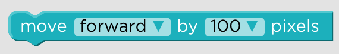
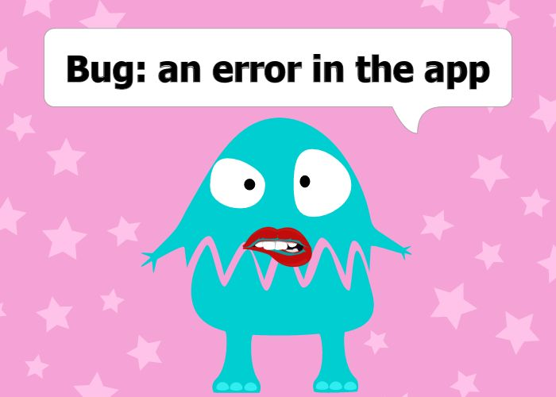
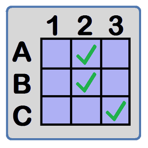

Erica Pantoja
Kennesaw State University
" Hopper's Fables "
CREU_Reseach_2016-2017

Terminology: Snap
(Dec 9 - Dec 15)
Snap terminology is clear and neat; One word is used for instruction and they are short and common words. Read More
Terminology: Frozen
(Dec 9 - Dec 15)
I found Frozen terminology very clear; short words, one-word instruction, and, common words. Read More
Terminology!
(Dec 3 - Dec 9)
During this week, I am documenting the words used in Snap and Frozen. Terminology is a very important factor in any programming language specially...
 Read MoreStart coding on Blockly!
(Nov 25 - Dec 2)
We finally started coding. My task during this week was to code the blog "turn". Turn left and right.
 Read More
Read More
ACM Mid-Southeast Conference! Fall conference
Gatlinburg, Tennessee
(Nov7- Nov14)
My reseach mates and I got accepted to present our project at the ACM Mid-Southeast Fall 2016 Conference on Nov 11. So during this week we were getting ready for this big day
ACM Mid-Southeast Chapter Fall Conference
Read MoreBlockly, JavaSript, HTML ...
(Oct 18- Nov 6)
During this two weeks, I have been playing with Blockly, JavaSrcript and HTML. I hadn't used them before but now after messing around with these tools I feel more confident about our project. I am really enjoying to learn JavaScript, HTML, CSS, and Blockly, I spend hours playing with them and It is never enough. There is a lot we can do with these amazing tools.
During these two weeks we were also working on our abstract and submitting paperwork for conferences :)
No more to read :)
Hopper's Fables: Rubric (Final!!!!!!)
id = "date" (Oct 11- Oct 17)
This week we are working on finalizing our rubric according a 3 point rubric evaluation.
 Read MoreHopper's Fables: Rubric (close to the final product)
id = "date" (Oct 03- Oct 11)
This week we are working on finalizing our rubric and work on our proposal.
Read MoreHopper's Fables: Rubric
(Sep 26 - Oct 03)
This week we are going to focus in elaborate our rubric and the storylines of out language
 Read More
Read More
Keep doing reseach about existing block languages
(Sep 19 - Sept 26)
During this week we are continuing doing research about other block programming languages and their evaluation in education. I found out very interesting artilces that evaluate Scratch and App Inventor on programming skills, but have not found an exisiting block programming language that foucus on math and reading skills. This is why our language will be unique and most sucessful. Through out our storylines, kids will not only gain programming skills but also math and reading skills. Read More
Brainstorming- Characteristics of our language
(Sep 12 - Sept 19)
During this week I am doing more reseach about existing block programming languages, especially on those that according professionals are best block programming languages in education. Among those languages are Scracth, Scratch Jr. App Inventor, Lego, and Alice. Our task is do research about the evaluation of those top block programming languages so we can start elaborating the reubric of our block programming language. What wil make our language unique? What characteristics it must to have? What would be nice to have?
Reseach About Existing Block Programming Languages
(Sept 3 - Sept 12)
My task during this week is to do reseach about existing block programming languages, read the article Predicting Quality in Educational Software: Evaluating for Learning, Usability and the Synergy between them by David Squires and Jenny Preece, and get familiarized with Scratch and Blockly.
 Read More
Read More